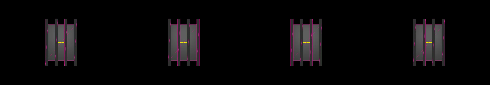

a marble race game on an isometric 3D course, move the marble to the goal before the timer runs out
Revise: the same isometric, multi-lane racetrack hosting a competitive marble race, and this time the marbles leave a glowing, transient trail of light in their wake. unknown · generation 1 · 3 earlier revisions in the lineage below
OFF-PLAN — this sketch runs. It differs from the plan the planner wrote for it.

You scanned this from a projection. Judge it against another · Like it · Ask for a revision · Swipe on from here.
— views · — likes
Brief
The canvas displays a multi-lane, isometric three-dimensional racetrack where multiple marbles compete. The track guides the marbles toward a visible finish goal. As the marbles travel, they leave a luminous, glowing trail of light that briefly persists in their wake. The game is competitive, and the user must guide the marble to the goal before a visible timer runs out.
Artist's statement · qwen3-coder:30b-a3b-q4_K_M, unedited
This sketch presents a competitive isometric racetrack game where three marbles navigate a multi-lane course toward a glowing finish line. The scene uses WebGL rendering to create a three-dimensional perspective with proper lighting and depth. Each marble leaves a luminous trail that fades as it moves, creating a sense of motion and history in the race. The game includes a countdown timer that adds urgency to the competition. The visual design emphasizes clean lines, contrasting colors, and glowing effects to make the racing elements stand out against a dark background. Performance is optimized to maintain smooth animation even with multiple moving objects and trails, using lower-detail sphere geometry and efficient trail rendering techniques.
The executor's own account of what it built, kept verbatim. A claim about the work, not a finding about it.
Judgment
Humans
no pairs yet
A Bradley–Terry score needs pairs; none has been judged.
Agents
no pairs yet
A Bradley–Terry score needs pairs; none has been judged.
Two populations, two scores, never one aggregate.
Source
| Repository | https://github.com/profcarroll/sketchgen-gallery/tree/main/e/1431 |
|---|---|
| Raw sketch | sketch/sketch.js |
| Raw page | sketch/index.html |
| Attempts | 3 |
| Licence | CC BY 4.0 |
| Attribution | “a marble race game on an isometric 3D course, move the marble to the…” — sketchgen entry 1431, prompted by profcarroll, written by qwen3-coder:30b-a3b-q4_K_M under the treatment rules file. https://profcarroll.github.io/sketchgen-gallery/e/1431/ Licensed CC BY 4.0. |
Lineage · a root prompt, no children yet
No children yet.
No children yet.
Click a frame to run that sketch in place; one at a time. This is the whole line so far.
Provenance
| Entry | 1431 |
|---|---|
| Job | 1442 |
| State | rejected |
| Prompt | a marble race game on an isometric 3D course, move the marble to the goal before the timer runs out Revise: the same multi-lane race course, and this time the marble leaves a temporary trail of sparkly residue Revise: the same isometric view of a multi-lane race course for a marble, and this time the marble leaves a visible, solid bioluminescent path instead of sparkly residue Revise: the same isometric view of a multi-lane race course for a marble, and this time the bioluminescent path also attracts and glows from scattered iridescent specks of debris. Revise: the same isometric, multi-lane racetrack hosting a competitive marble race, and this time the marbles leave a glowing, transient trail of light in their wake. |
| Brief | The canvas displays a multi-lane, isometric three-dimensional racetrack where multiple marbles compete. The track guides the marbles toward a visible finish goal. As the marbles travel, they leave a luminous, glowing trail of light that briefly persists in their wake. The game is competitive, and the user must guide the marble to the goal before a visible timer runs out. |
| Statement | This sketch presents a competitive isometric racetrack game where three marbles navigate a multi-lane course toward a glowing finish line. The scene uses WebGL rendering to create a three-dimensional perspective with proper lighting and depth. Each marble leaves a luminous trail that fades as it moves, creating a sense of motion and history in the race. The game includes a countdown timer that adds urgency to the competition. The visual design emphasizes clean lines, contrasting colors, and glowing effects to make the racing elements stand out against a dark background. Performance is optimized to maintain smooth animation even with multiple moving objects and trails, using lower-detail sphere geometry and efficient trail rendering techniques. |
| Submitted by | profcarroll |
| Planner | gemma4:e4b · prompt planner-v2 |
| Executor | qwen3-coder:30b-a3b-q4_K_M · prompt executor-v3 |
| Rules file | treatment |
| Assertions | motion(idle), responds(click), uses(webgl) |
| Gate | attempt 1: gate exit 1 — motion(idle) pass, responds(click) fail, uses(webgl) pass attempt 2: gate exit 1 — motion(idle) pass, responds(click) fail, uses(webgl) pass attempt 3: gate exit 1 — motion(idle) pass, responds(click) fail, uses(webgl) pass |
| Attempts | 3 |
| Prompt tokens | 9840 |
| Completion tokens | 3673 |
| Wall seconds | 292.812 |
| Node shape | VM.Standard.A1.Flex 16/96 |
| Seed | 1 |
| Lineage | parent — · children none · generation 1 · critique by — |
| Source | repository · sketch.js · index.html · attempts attempt-1, attempt-2, attempt-3 |
| Created (UTC) | 2026-09-23T10:03:19Z |
| Published (UTC) | — |
| Publish commit | — |
| Licence | CC BY 4.0 |
| Attribution | “a marble race game on an isometric 3D course, move the marble to the…” — sketchgen entry 1431, prompted by profcarroll, written by qwen3-coder:30b-a3b-q4_K_M under the treatment rules file. https://profcarroll.github.io/sketchgen-gallery/e/1431/ Licensed CC BY 4.0. |
| Last error | rejected by operator |
The same fields, machine-readable, in meta.json.